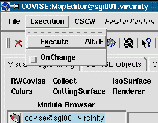

|
Same function (execute from the beginning) available via
|
To execute the map starting with
a specific module use
|
|  |
Execution provides the following options
|
Same function (execute from the beginning) available via
|
To execute the map starting with
a specific module use
|
Note:
| You can follow up the flow of control
thru the map: the frame of the module just executed turns red.
(default - can be switched off via Covise config.file if necessary for performance reasons) |